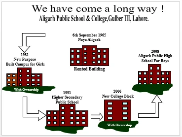
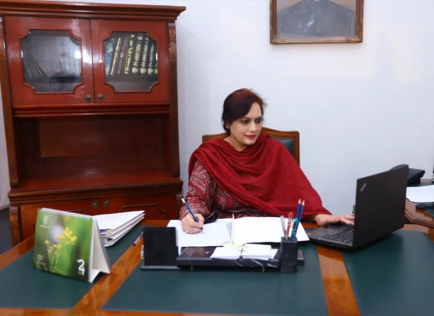

Our Roots, History, Sir Syed's Vision & Tehzibul Akhlaq Trust
Sir Syed Ahmed Khan a literary genius, an outstanding scholar, an educationist, jurist and politician—–pioneered modern Education for the Muslim community in India and founded the Aligarh Muslim University. His work gave rise to a new generation of Muslim intellectuals, politicians and the Aligarh Movement to secure the political future of Muslims in British India.
In the aftermath of the Indian-Rebellion of 1857, Sir Syed foresaw the imperative need for the Muslims to acquire proficiency in English language and “Western Sciences” in order to maintain their social and political clout. His influential booklet “Asbab-e-Baghawat-e-Hind” (The Causes of the Indian Revolt) had already won him great acclaim. He began to prepare the roadmap for the formation of a Muslim University by starting various schools. He also started publishing the famous Journal “Tehzibul Akhlaq” in 1870 which generated a great deal of awareness in the Muslims of the sub-continent. In 1877, Sir Syed founded the Mohammadan Anglo-Oriental (MAO) College in Aligarh which would become the centre of Muslim intellectual life in India. Over the years, the MAO College gave rise to a new educated class of Muslims who were politically active in British Raj. The college which was transformed into a university in 1920 as Aligarh Muslim University, was widely believed to be “the University that created Pakistan”
In furtherance of the mission of Sir Syed Ahmad Khan, Tehzibul Akhlaq Trust was established in 1961 at Lahore by the enlightened, progressive and devoted alumni of Aligarh Muslim University and some other eminent scholars and philanthropists. The Trust was established in order to:
Founded over 50 years ago by dedicated volunteers inspired by Aligarh Muslim University, Tehzibul Akhlaq Trust provides affordable, high-quality education. The institution has successfully nurtured over 20,000 alumni and currently serves more than 2,000 active students across custom-built campuses featuring modern labs, libraries, sports grounds, and hostel facilities at our Manga Campus.
Beyond academics, we prioritize moral values, character building, and shaping responsible, patriotic citizens. Driven by continuous progress, we invite you to be part of this noble educational mission.
(06th Sep 1965 –12th Sep 1982)
On 6th
Sept.
1965, about 75 children entered the premises of Aligarh which was started in a rented building
at
39-B/1, Gulberg-III, Lahore. Unfortunately, this day was quite bleak in the history of Pakistan
as the
war started between India & Pakistan at Wahga Border Lahore. On account of this situation, the
school
remained closed for few days. However, academic activities resumed in the school after the war
ended. At
that time, the Management, staff and support staff helped a lot to carry forward the mission of
Tehzibul
Akhlzq Trust. It was the result of their untiring efforts that the school started growing within
a year.
Therefore, the very next year in 1966, the school was shifted to a comparatively bigger building
at
27-C-I, Gulberg-III. This was a time when Aligarh Public School was the only institute in the
vicinity
in order to cater for the educational needs at K.G. primary, middle and secondary level. In this
way, a
platform was provided to the children in order to show their talents and to discover new facets
of their
personality.
By upholding this maxim that education is the knowledge not of facts but of values, Aligarh Public School Gulberg kept on growing with the passage of time. As the years went on, this small building became insufficient to fulfill the educational needs of the institute. In view of pressing demand of time, the school was shifted to its present premises in 1982.
(12th 1982 till date)
At the threshold of 50th year of the
institute,
turning down the pages of history, it is a matter of great pride for us that from the small
beginning in
a rented building in 1965, the Institute was shifted to its own spacious building in 1982. The
school
building was constructed on a piece of land measuring 14 kanals, 12 marlas, 90 sq.f.t which was
purchased from LDA in 1968.
In view of this progressive approach of TAT in terms of acquisition of land for school building and its construction, that too in an era when a few schools, in private sector, had own building has made it binding for us to acknowledge this fact
“We would not have been what we are today without the missionary zeal and untiring efforts of our founding fathers”.
By carrying out the work with the same vigour, enthusiasm, diligence and commitment, we have come a long way.
On 12th Sept, 1982 studies were formally started in the new custom- built campus. Maintaining the pace of quality education, we progressed slowly but steadily and the school was upgraded to higher secondary level in 1991. Adjacent to school block, a new purpose built campus for intermediate classes for girls was inaugurated in 2006.In the same block, a separate campus for boys – Aligarh Public High School for Boys was launched in 2008.

A graceful inauguration ceremony was held on 12th April 2006 in which Mr. Abdur Razak Dawood, ex-Federal Minister, Chairman DESCON and Rector LUMS inaugurated the new building of Aligarh College for Women..
The Chief Guest appreciated the custom built campus of the College and services of the Tehzibul Akhlaq Trust in providing quality education to the girls:
In 2008 Aligarh Public High School for Boys was established in an entirely separate campus at Gulberg which of course, is a starring addition in the educational institutes working under the auspices of Tehzibul Akhlaq Trust. At boys school, boys are provided with opportunities to grow and develop according to their own aptitudes and abilities. For this purpose one-on-one counseling & guidance is provided to the students as & when required.

Welcome to Aligarh Public School Gulberg. We offer quality Higher Secondary education for girls and Secondary education for boys across separate campuses, providing a supportive environment where every student is valued.
Our holistic approach balances academic excellence with creative, athletic, and moral development. Grounded in tolerance, respect, and social responsibility, we prepare confident graduates ready for independent life and meaningful contributions to society.